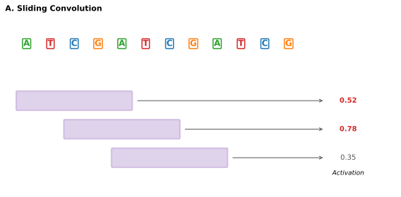
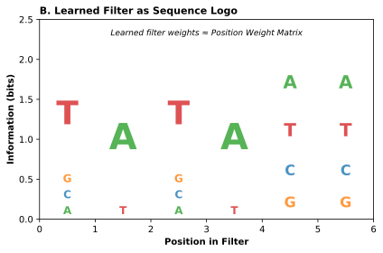
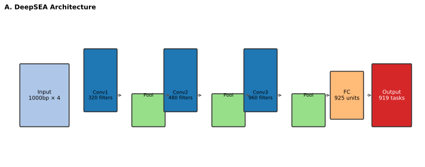
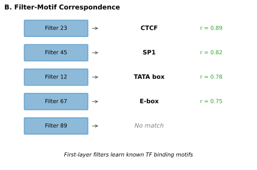
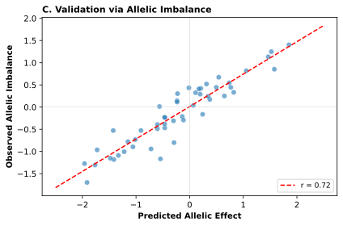
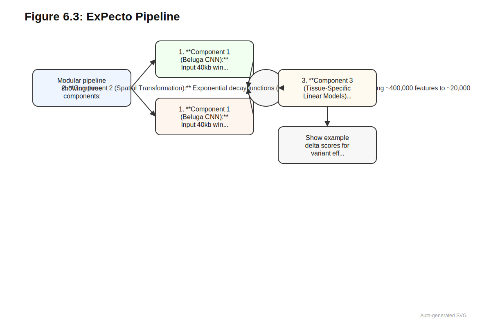
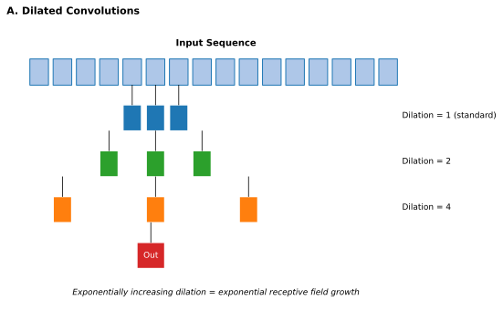
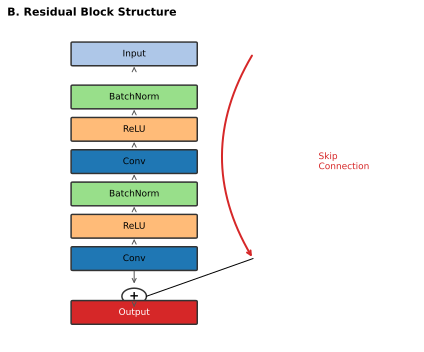
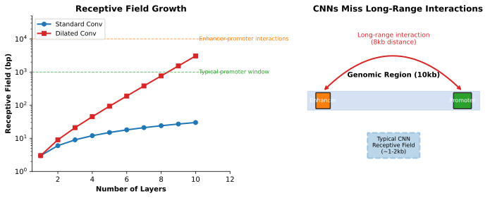

6 Convolutional Networks
The network discovered what biologists had spent decades cataloging—without ever being told what to look for.
Estimated reading time: 35-45 minutes
Prerequisites: Understanding of one-hot encoding and tokenization (see Chapter 5), basic familiarity with neural network concepts (layers, activation functions, gradient descent). No prior deep learning architecture knowledge required.
You will learn:
- How convolutional filters detect sequence patterns analogous to transcription factor motifs
- The end-to-end learning paradigm: from raw sequence to regulatory predictions
- How DeepSEA, Basset, ExPecto, and SpliceAI transformed variant interpretation
- Why receptive field limitations constrain what CNNs can learn about long-range regulation
- The tradeoffs between task-specific and general-purpose genomic models
Key insight: Convolutional networks proved that gradient descent on raw DNA sequence could discover regulatory patterns without encoding human assumptions about what matters. This paradigm, not any specific architecture, was the lasting contribution that modern foundation models inherit.
In 2015, a convolutional neural network trained on ENCODE chromatin data learned to recognize transcription factor binding motifs that matched entries in the JASPAR database, despite never seeing those motifs during training (Zhou and Troyanskaya 2015). Through gradient descent on raw sequence, the model found the same patterns that experimental biologists had painstakingly assembled into curated databases. This was not merely a demonstration that deep learning could match human-curated databases. The deeper insight was that learned representations could transcend existing annotations: predicting regulatory effects for any sequence, in any genomic context, including regions never assayed in any experiment. For the first time, computational methods could move beyond annotating known regulatory elements to predicting the functional consequences of sequence variation genome-wide.
The early convolutional models established paradigms that persist in modern genomic AI. DeepSEA demonstrated that CNNs could predict chromatin marks and transcription factor binding directly from DNA sequence, enabling variant effect prediction without requiring experimental measurements for every variant of interest. Basset extended this approach to chromatin accessibility across cell types, learning representations that transferred to new cellular contexts. SpliceAI achieved clinical-grade accuracy for splice site prediction, demonstrating that deep learning could match or exceed hand-crafted algorithms developed over decades. Each model followed a common pattern: train on functional genomics data, learn sequence features through convolutional filters, and apply to variant interpretation. The success was substantial; the paradigm seemed complete.
Yet these models revealed a fundamental architectural limitation. Convolutional networks integrate information only within their receptive fields, the local region of input that contributes to each output position. Genomic regulation routinely operates across distances that exceed practical receptive field sizes: enhancers control genes across tens of kilobases, topologically associating domains span megabases, GWAS variants often lie far from the genes they affect. A model analyzing a variant 50 kilobases from a gene promoter cannot connect the variant to its target using local convolutions alone. Understanding both what CNNs achieved and where they reached this architectural ceiling establishes the foundation for the attention mechanisms examined in Chapter 7.
6.1 Convolutions as Sequence Pattern Detectors
Before reading about how convolutions work, consider: if you wanted to detect a transcription factor binding site (typically 6-12 nucleotides) at any position along a DNA sequence, what properties would your detection algorithm need? How would it differ from simply searching for an exact sequence match?
A variant in an enhancer 50 kilobases from its target gene cannot be connected to that gene by a model that sees only 1,000 base pairs of context. Consider a patient with familial hypercholesterolemia whose whole-genome sequencing reveals a novel variant upstream of LDLR. The variant sits within a known enhancer region, but the enhancer and the LDLR promoter lie beyond the window any convolutional layer can span. The model might correctly identify regulatory features at the variant position, but it cannot learn that those features regulate LDLR rather than some other gene. This receptive field constraint, inherent to convolutional architectures, determines what relationships these networks can and cannot discover. The constraint is not a limitation of training data or compute; it is architectural.
A convolutional filter slides across an input sequence, computing similarity scores at each position. For genomic applications, the input is typically one-hot encoded DNA: a binary matrix with four rows (A, C, G, T) and columns for each position (see Chapter 5 for detailed treatment of sequence encoding strategies). Filters learn weight patterns that respond to specific nucleotide arrangements. A filter of width 8 nucleotides, for instance, computes a weighted sum of the underlying nucleotides at each position, producing high activation when the sequence matches its learned pattern and low activation otherwise. This operation is mathematically equivalent to scanning a position weight matrix across the sequence, but with a crucial difference: the filter weights are learned during training rather than derived from aligned binding site sequences.
Convolutional filters are learned position weight matrices. The difference from classical PWMs is not in what they compute, but in how they are derived: through gradient descent on prediction tasks rather than sequence alignment. This means filters discover patterns that predict the training labels, not just patterns that recur in sequences.
Consider a filter of width 4 learning to detect the TATA box motif. Why width 4? The TATA box consensus is approximately 4-6 bp, so a 4-bp filter can capture its core pattern. Filters narrower than the motif miss context; filters much wider waste capacity on flanking sequence that varies between binding sites. The first CNN layer typically uses multiple filter widths (4, 8, 12, 16 bp) to capture motifs of different lengths simultaneously—transcription factor binding sites range from 6-12 bp, so no single width suffices.
After training, the filter weights might be:
| Position | A | C | G | T |
|---|---|---|---|---|
| 1 | -0.2 | -0.5 | -0.5 | 1.8 |
| 2 | 1.5 | -0.3 | -0.4 | -0.2 |
| 3 | -0.2 | -0.5 | -0.5 | 1.9 |
| 4 | 1.6 | -0.4 | -0.3 | -0.3 |
For input sequence “TATA”:
- Position 1 (T): weight = 1.8
- Position 2 (A): weight = 1.5
- Position 3 (T): weight = 1.9
- Position 4 (A): weight = 1.6
- Total activation: 6.8 (high match)
For input sequence “GCGC”:
- Position 1 (G): weight = -0.5
- Position 2 (C): weight = -0.3
- Position 3 (G): weight = -0.5
- Position 4 (C): weight = -0.4
- Total activation: -1.7 (low match)
The filter produces high activation for sequences matching its learned pattern (TATA) and low/negative activation for mismatches. As this filter slides across a long sequence, it produces a profile of TATA box likelihood at each position.
The first layer of a genomic CNN typically contains hundreds of such filters, each learning to detect different local patterns. Analysis of trained filters consistently reveals correspondence to known transcription factor binding motifs. The CTCF insulator motif, the ETS family consensus sequence, the AP-1 binding site: these patterns emerge from training on chromatin data without any explicit motif supervision. The network identifies them because they predict the training labels. Supervision on chromatin state induces discovery of the sequence patterns that create chromatin state, providing unsupervised motif learning as a byproduct of supervised prediction.
Deeper layers operate on the output of earlier layers rather than raw sequence. A second-layer filter might learn to detect specific arrangements of first-layer motifs: two ETS sites within 20 base pairs, or a CTCF motif flanked by particular spacing patterns. This hierarchical feature learning enables CNNs to capture regulatory grammar beyond individual motifs, including spacing constraints, orientation preferences, and combinatorial requirements that govern transcription factor cooperativity.



Between convolutional layers, spatial resolution must decrease while the receptive field expands. Pooling operations achieve this tradeoff: max pooling selects the strongest activation within a window, achieving position-invariant detection where the network responds to a motif’s presence somewhere in a region rather than its exact position. Why does this position invariance matter? Transcription factors typically locate their binding sites through scanning and diffusion rather than measuring exact distances from fixed landmarks. A CTCF site functions whether it sits at position 150 or 180 within an enhancer; the regulatory logic depends on which motifs co-occur, not their precise coordinates. Pooling encodes this biological flexibility directly into the architecture, preventing the network from memorizing position-specific patterns that would fail to generalize across genomic contexts.
For biology readers: The receptive field is how much input sequence can influence each output prediction:
The concept: Imagine looking at a photo through a small window—you can only see a portion at a time. A CNN’s receptive field is like this window: it determines how much genomic context the model can “see” when making predictions at any position.
How it grows:
- A single convolutional layer with filter width 8 sees 8 nucleotides
- Stacking layers expands the view: each layer adds context from the previous layer’s outputs
- Pooling (downsampling) dramatically expands receptive field by compressing spatial information
Typical sizes:
| Model | Receptive Field | What It Can Capture |
|---|---|---|
| DeepSEA | ~1,000 bp | Local motifs, TF binding |
| SpliceAI | ~10,000 bp | Splice sites + nearby regulatory elements |
| Enformer | ~200,000 bp | Enhancer-promoter interactions |
The limitation: Biology doesn’t respect receptive field boundaries. If an enhancer 50 kb from a gene affects its expression, a model with 10 kb receptive field cannot learn this relationship—it simply cannot see both elements simultaneously. This architectural ceiling motivated the move to attention mechanisms.
The following paragraph introduces the receptive field formula. If you prefer to focus on intuition, the key point is: more layers and wider filters increase how much sequence a CNN can see, but these increases are limited by computational constraints.
The receptive field of a convolutional network defines how much input sequence can influence a single output prediction. For a network with kernel width \(k\), pooling factor \(p\), and \(L\) layers, the receptive field grows with depth but remains fundamentally limited by architecture. A three-layer network with typical parameters might integrate information from 200 to 1,000 base pairs. Reaching further requires either more layers (increasing computational cost and training difficulty) or dilated convolutions that space filter weights to sample larger regions. When biological dependencies span tens of kilobases, this receptive field ceiling becomes the fundamental constraint that no amount of training data can overcome.
Before continuing, make sure you can answer: (1) What is a convolutional filter learning to detect? (2) Why does pooling create position invariance? (3) What determines how far a CNN can “see” in the input sequence?
- A convolutional filter learns to detect a specific sequence pattern or motif, responding strongly when that pattern appears in its receptive field. (2) Pooling creates position invariance by taking the maximum (or average) activation within a region, so the filter responds similarly whether the motif appears at position 10 or position 15 within that region. (3) The receptive field size determines how far a CNN can see, which is determined by the combination of filter width, number of layers, pooling operations, and dilation rates across the network.
6.2 DeepSEA: Regulatory Prediction from Sequence
A patient presents with a rare disease phenotype, and whole-genome sequencing reveals a novel variant in an intron 15 kilobases from the nearest exon. The variant does not disrupt any annotated regulatory element. No prior patient in any database carries this exact change. The clinician must decide: is this variant pathogenic, or is it an irrelevant passenger? Annotation-based methods offer no guidance. The variant overlaps nothing cataloged, so overlap-based interpretation returns nothing useful. Yet introns harbor splice regulatory elements, and 15 kilobases places the variant well within range of enhancers that might control the adjacent gene.
Existing approaches to noncoding variant interpretation relied on this overlap paradigm. If a variant fell within a ChIP-seq peak or DNase hypersensitive site, it might be flagged as potentially regulatory. The strategy grounded predictions in experimental observations, but it could not predict whether a variant would strengthen or weaken regulatory activity, could not score variants in regions lacking experimental coverage, and provided no mechanism for quantifying effect magnitude. A variant might fall within an enhancer, but would it matter? The data indicated where regulatory elements existed; they did not indicate how sequence changes would affect them.
DeepSEA, introduced by Zhou and Troyanskaya, reframed the problem: rather than asking whether a variant overlaps known annotations, ask what regulatory activities a sequence encodes and how mutations would alter them (Zhou and Troyanskaya 2015). The shift from annotation lookup to sequence-based prediction enabled scoring any variant in any genomic context, including regions never assayed in any experiment. This reframing would prove more consequential than any specific architectural choice.
DeepSEA’s lasting contribution was conceptual, not architectural. The shift from “does this variant overlap an annotation?” to “what does this sequence encode?” changed variant interpretation from database lookup to computational prediction. This reframing enabled scoring variants in any genomic context, including regions never experimentally assayed.



6.2.1 Architecture and Training
The clinical scenario described above demands a model that can predict function from sequence alone. DeepSEA’s architecture was deliberately simple by contemporary standards, placing the emphasis on the learning framework rather than architectural complexity.
Input sequences of 1,000 base pairs, one-hot encoded, passed through three convolutional layers with 320, 480, and 960 filters respectively. Max pooling after each convolution compressed spatial dimensions. A fully connected layer with 925 units integrated information across the compressed representation, and a final output layer with 919 sigmoid units produced independent probability predictions for each chromatin profile.
Training data came from ENCODE and Roadmap Epigenomics (see Chapter 2 for comprehensive treatment of these resources): 690 transcription factor binding profiles, 104 histone modification profiles, and 125 DNase I hypersensitivity profiles spanning diverse cell types (Kagda et al. 2025; Kundaje et al. 2015). For each 1,000 bp input, the model predicted whether the central 200 bp region exhibited each chromatin feature. Chromosome 8 was held out for evaluation.
The multi-task learning formulation proved essential for generalization. Predicting 919 features simultaneously forced the network to learn shared representations useful across many prediction problems. Why does joint training help? Consider the alternative: 919 separate models, each learning from scratch that certain nucleotide patterns indicate regulatory activity. Each model would independently discover that GC-rich regions often mark promoters, that the CTCF motif signals insulator function, that splice site dinucleotides follow consensus sequences. Multi-task learning amortizes this redundant effort. The first convolutional layer learns general sequence patterns (GC content, common dinucleotides, ubiquitous motifs); these representations then feed task-specific combinations in later layers. Joint training also provides implicit regularization: a filter that helps predict many chromatin features captures genuine sequence grammar, while a filter useful for only one task may reflect dataset-specific artifacts. This pressure toward shared representations prevents overfitting to any single task while ensuring that learned features generalize across regulatory contexts.
For biology readers: Multi-task learning means training one model to predict many outputs simultaneously:
The concept: Instead of training 919 separate models (one per chromatin feature), DeepSEA trains one model with 919 output nodes. All predictions share the same learned sequence features.
Why it helps:
Shared learning: Basic motifs (CTCF, ETS family) are useful for predicting many chromatin features. Learning them once and sharing across tasks is more efficient than re-learning for each task.
Regularization: Predicting many related outputs prevents the model from memorizing quirks of any single dataset. It must learn general patterns useful across contexts.
Transfer: Features learned from abundant data (e.g., well-studied cell lines) help predictions for scarce data (e.g., rare cell types with few experiments).
The biology analog: Think of it like this—understanding general transcription factor binding helps you interpret specific experiments across many cell types, rather than starting from scratch for each.
Trade-off: Multi-task learning assumes tasks share structure. If tasks are unrelated, forcing them to share features can hurt performance. For chromatin features, the shared regulatory grammar makes multi-task learning highly effective.
| Design Choice | DeepSEA Implementation | Rationale |
|---|---|---|
| Input length | 1,000 bp | Balance between context and computation |
| Encoding | One-hot (4 × L matrix) | Preserves single-nucleotide resolution |
| Architecture | 3 conv layers + 1 FC | Sufficient depth for motif combinations |
| Output targets | 919 chromatin profiles | Multi-task learning improves generalization |
| Loss function | Binary cross-entropy | Independent predictions per feature |
| Validation | Chromosome 8 held out | Ensures genomic generalization |
6.2.2 Learned Representations and Biological Validation
Any sequence model faces a fundamental question: do learned features correspond to biological reality, or do they exploit statistical shortcuts that happen to correlate with labels? DeepSEA provided the first large-scale evidence that deep learning could recover genuine regulatory logic.
Why is it significant that DeepSEA’s learned filters matched known transcription factor motifs? What would it mean if the filters learned to predict chromatin state without capturing recognizable biological patterns?
Analysis of first-layer filters revealed learned patterns matching known transcription factor motifs. The network had independently recovered sequence preferences cataloged in JASPAR and TRANSFAC, confirming that the training objective (predicting chromatin state) induced biologically meaningful feature extraction. This interpretability distinguished deep learning from prior black-box approaches and suggested that the models captured genuine regulatory logic rather than spurious correlations. Systematic methods for extracting and visualizing these learned representations, from filter analysis to attribution mapping, are examined in Chapter 24.
Deeper layers combined first-layer patterns into more complex representations, capturing motif spacing requirements, orientation preferences, and cooperative binding arrangements. The network encoded relationships between sequence features that position weight matrices, operating independently at each motif, could not represent.
DeepSEA outperformed gkm-SVM (gapped \(k\)-mer support vector machines) on nearly all transcription factor binding prediction tasks (Zhou and Troyanskaya 2015). The pattern of improvement revealed something fundamental: gkm-SVM showed no benefit from longer input sequences, while DeepSEA performance improved substantially with additional context. K-mer methods tally motif occurrences but cannot learn relationships between patterns at different positions. Hierarchical feature learning enables exactly what \(k\)-mer methods cannot provide: representations of combinatorial regulatory logic.
6.2.3 Variant Effect Prediction
With a trained sequence-to-chromatin model, variant scoring becomes straightforward: predict chromatin profiles for reference and alternative sequences, compute the difference. This in silico mutagenesis produces a 919-dimensional vector describing predicted changes across all features. The model never encounters variant data during training; effect prediction emerges from learned sequence-function relationships applied to mutations the model has never seen.
Validation used allelic imbalance data from digital genomic footprinting. For variants showing allele-specific DNase I sensitivity, DeepSEA predictions correlated with experimentally observed biases: variants predicted to increase accessibility tended to show higher accessibility on the corresponding allele. This correlation would not exist if the model merely learned coarse sequence features insensitive to point mutations.
Systematic characterization of regulatory elements requires more than single-variant scoring. In silico saturation mutagenesis predicts effects of all possible substitutions across a regulatory element, identifying positions where mutations most strongly perturb function. These critical positions typically correspond to transcription factor binding motifs, providing motif discovery that emerges from learned representations rather than explicit sequence alignment. The approach enables characterization of any regulatory element, including those in cell types or conditions never experimentally profiled. Foundation models extend these principles to longer contexts and richer representations (Chapter 17), while clinical integration requires calibration approaches that map model outputs to actionable categories (Chapter 28).
Before continuing, make sure you can explain:
- How convolutional filters work: Learned weight patterns that slide across sequences, producing high activation when input matches the learned motif
- Why multi-task learning helps: Shared representations across 919 chromatin features prevent overfitting and discover general regulatory patterns
- In silico mutagenesis: Predict effects by comparing reference vs. alternative sequence predictions—no variant training data required
- The receptive field limitation: CNNs can only integrate information within their architectural context window (typically 1-10 kb)
If any of these are unclear, re-read the relevant sections before proceeding. The remaining sections build on these foundations.
6.3 Cell-Type Specificity and Regulatory Grammar
A variant that disrupts cardiac-specific gene regulation may be lethal in the heart but entirely silent in neurons. A regulatory element active during embryonic development may be permanently silenced in adult tissues. Clinical variant interpretation therefore requires models that capture not just what sequence patterns predict regulatory activity, but how those predictions vary across the dozens of cell types and developmental stages where a variant might act. DeepSEA’s 919 chromatin features spanned multiple cell types, but the question remained: could architectural modifications better capture cell-type-specific programs or learn richer representations of the combinatorial grammar governing transcription factor cooperativity?
Basset, introduced by Kelley et al. in 2016, focused specifically on predicting chromatin accessibility from sequence (Kelley, Snoek, and Rinn 2016). Rather than DeepSEA’s diverse chromatin features, Basset predicted DNase-seq peaks across 164 cell types, enabling detailed analysis of cell-type-specific regulatory activity. The architectural refinements Basset introduced would influence subsequent models: batch normalization after convolutional layers stabilized training and enabled deeper networks, while larger filters in early layers (19 nucleotides in the first layer) captured longer motifs directly rather than requiring the network to compose them from smaller patterns.
The key contribution was demonstrating that in silico saturation mutagenesis profiles from trained models could identify causal variants underlying disease-associated haplotypes. GWAS identifies associated regions but cannot distinguish the causal variant from nearby variants in linkage disequilibrium (see Chapter 3 for the statistical foundations of association studies). Basset’s saturation mutagenesis provided a principled approach: the variant with the strongest predicted regulatory effect within an associated haplotype is the most likely causal candidate. Foundation models like Enformer (Chapter 16) extend this principle to longer contexts that capture more distal regulatory influences on GWAS signals. This moved beyond simple peak overlap toward mechanistic variant prioritization, and the original Basset study confirmed that model-prioritized variants (high-PICS SNPs) showed higher rates of predicted accessibility change than nearby SNPs selected by GWAS association strength alone (Kelley, Snoek, and Rinn 2016).
DanQ explored whether regulatory grammar involves sequential dependencies that convolutions alone might miss, combining convolutional layers with bidirectional LSTMs to integrate motif detections across the input window (Quang and Xie 2016). The hybrid architecture achieved modest improvements on chromatin prediction benchmarks, though the recurrent components introduced costs examined in Section 6.7.
| Model | Year | Prediction Target | Input Length | Key Innovation |
|---|---|---|---|---|
| DeepSEA | 2015 | 919 chromatin features | 1,000 bp | Multi-task learning, in silico mutagenesis |
| Basset | 2016 | 164 cell-type DNase-seq | 600 bp | Batch normalization, larger first-layer filters |
| DanQ | 2016 | 919 chromatin features | 1,000 bp | CNN + bidirectional LSTM hybrid |
| ExPecto | 2018 | 218 tissue expression | 40 kb (aggregated) | Tissue-specific expression from chromatin |
| SpliceAI | 2019 | Splice sites | 10,000 bp | Dilated convolutions, 32-layer depth |
These variations illustrated a broader principle: multiple architectures could learn useful regulatory representations from sequence. The specific choices (filter sizes, layer depths, recurrent components) mattered less than the fundamental framework of learning from one-hot encoded sequence to predict chromatin labels. This robustness suggested that the underlying signal, sequence determinants of regulatory activity, was strong enough to be captured by diverse architectural approaches. For clinical applications, prediction quality depends more on training data quality and task definition than on architectural details within the CNN family.
6.4 ExPecto: From Chromatin to Expression
A patient’s tumor harbors a somatic variant in a putative enhancer region. Chromatin profiling in matching tissue shows the region is accessible. The variant is predicted to disrupt a transcription factor binding site. Yet the clinician’s question remains unanswered: does this variant actually change expression of a target gene? Which gene? By how much? In which tissues?
Chromatin accessibility tells us where the genome is “open” for regulation, but accessibility alone does not tell us which genes are affected or by how much. What additional information would a model need to predict gene expression from sequence? How would you connect a variant in an enhancer to its target gene?
Chromatin accessibility and transcription factor binding are intermediate phenotypes, means rather than ends. The ultimate functional readout for most regulatory variants is their effect on gene expression. A variant might disrupt a binding site, but sites can be redundant, effects can be buffered, and the relationship between binding and expression is not one-to-one. Predicting expression change from sequence requires integrating regulatory signals across distances that determine which enhancers control which promoters. A variant that disrupts binding but does not alter expression is unlikely to be pathogenic, while a variant with modest chromatin effects but strong expression consequences may drive disease.
ExPecto, introduced by Zhou et al. in 2018, addressed these questions by extending sequence-to-chromatin prediction toward tissue-specific gene expression (Zhou et al. 2018). The framework predicts expression levels across 218 tissues and cell types by integrating predicted chromatin signals across a 40 kb promoter-proximal window. This context expansion, from DeepSEA’s 1 kb to ExPecto’s 40 kb, represented a significant architectural commitment: expression prediction requires integrating regulatory signals from distances far exceeding typical motif sizes.

6.4.1 Modular Architecture
ExPecto comprises three sequential components, each addressing a distinct computational challenge. The separation proved essential: jointly optimizing all components end-to-end would be computationally prohibitive, and the modular design enables interpretability at each stage.
The first component, an enhanced CNN called Beluga, predicts 2,002 chromatin profiles from 2,000 bp input sequences. Beluga incorporated architectural improvements over DeepSEA: six convolutional layers with residual connections, expanded chromatin targets, and broader cell-type coverage. This CNN scans the 40 kb region surrounding each transcription start site with a moving window, generating chromatin predictions at 200 spatial positions and producing over 400,000 features per gene.
The second component transforms these high-dimensional features through spatial aggregation. Ten exponential decay functions, applied separately to upstream and downstream regions, encode the prior belief that nearby elements contribute more than distant ones. This transformation reduces dimensionality while preserving spatial relationships, producing approximately 20,000 features per gene that capture both which chromatin features are predicted and where they occur relative to the TSS.
The final component comprises 218 L₂-regularized linear regression models, one per tissue, predicting log expression from spatially-transformed features. Linear models were chosen deliberately: they provide interpretability, prevent overfitting given the high-dimensional feature space, and enable coefficient analysis to identify which chromatin features drive expression in each tissue. The combination of a shared sequence-to-chromatin CNN with separate tissue-specific linear heads cleanly separates sequence-level regulatory grammar from tissue-specific regulatory programs.
ExPecto’s modular design reflects a key principle: different aspects of gene regulation require different modeling approaches. Convolutional networks excel at learning local sequence patterns (motifs), while linear models with spatial priors capture how these patterns integrate across distance. This separation enables interpretation at each stage and prevents end-to-end black boxes.
6.4.2 Expression Prediction and Variant Effects
ExPecto achieved 0.819 median Spearman correlation between predicted and observed expression across tissues. Analysis of model coefficients revealed automatic learning of cell-type-relevant features: the liver expression model weighted HepG2-derived transcription factor features most heavily; breast tissue models emphasized estrogen receptor features from breast cancer cell lines. These tissue-specific patterns emerged purely from learning to predict expression, without tissue identity information provided to the chromatin model.
Variant effect prediction follows the same logic as DeepSEA: compare expression predictions for reference and alternative sequences. Because the model never trains on variant data, predictions are unconfounded by linkage disequilibrium, a critical distinction from association-based methods (see Chapter 12 for detailed treatment of confounding in genomic models). ExPecto correctly predicted expression change direction for 92% of the strongest GTEx eQTL variants, and experimental validation confirmed that model-prioritized variants (not the GWAS lead SNPs) showed allele-specific regulatory activity in luciferase reporter assays (Zhou et al. 2018).
The 40 kb window represents an empirically optimized trade-off. Smaller windows decreased performance; larger windows showed negligible improvement. Most promoter-proximal regulatory information lies within 40 kb of the TSS, at least within ExPecto’s linear modeling framework. Distal enhancers beyond this window, while biologically important, require architectural approaches that can model longer-range dependencies. This limitation points toward the transformer architectures and hybrid models examined in Chapter 16.
6.5 SpliceAI: Clinical-Grade Splicing Prediction
A child presents with developmental delay and dysmorphic features consistent with a known genetic syndrome. Clinical exome sequencing reveals no pathogenic coding variants in the implicated gene. The case is signed out as “unsolved,” the family left without answers. Three years later, research RNA sequencing identifies aberrant splicing in the syndromic gene: an intronic variant 150 base pairs from the nearest exon creates a cryptic splice site, inserting a premature stop codon. The diagnosis was hiding in plain sight, invisible to methods that only examine canonical splice dinucleotides.
This scenario, replicated across thousands of unsolved rare disease cases, illustrates a systematic blind spot in clinical genomics. Splice-disrupting mutations represent a major mechanism of Mendelian disease (see Chapter 28 for broader treatment of rare disease diagnosis), yet variants affecting splicing outside canonical GT/AG dinucleotides are systematically underascertained. Prior splice prediction methods captured essential splice site motifs but could not model the long-range determinants contributing to splicing specificity. MaxEntScan operates on approximately 9 bp of context around donor and acceptor sites (Yeo and Burge 2004). The method established the paradigm of quantitative splice site scoring using maximum entropy distributions and remains a standard baseline for variant interpretation, but its narrow window fundamentally limits what biology it can capture. These methods produced many false positives and missed variants acting through distal mechanisms: branch points, exonic splicing enhancers, and intron length constraints that previous models could not see.
SpliceAI, introduced by Jaganathan et al. in 2019, demonstrated that deep neural networks could learn sequence-intrinsic splicing rules sufficient to predict the majority of splice sites used by the spliceosome (Jaganathan et al. 2019). The model predicts splice site locations directly from pre-mRNA sequence using 10,000 nucleotides of context, an order of magnitude beyond prior methods. This context expansion enabled recognition of distant splicing determinants invisible to annotation-based approaches.
SpliceAI uses 10,000 nucleotides of context, compared to MaxEntScan’s 9 nucleotides. What biological features might be captured by this expanded context? Think about the components involved in splicing beyond just the GT/AG dinucleotides.
6.5.1 Architecture: Depth and Dilation
Learning splicing rules from 10 kb of sequence context requires an architecture that can integrate information across this entire span while maintaining nucleotide-level resolution. SpliceAI achieves this through two innovations: extreme depth enabled by residual connections, and dilated convolutions that expand receptive fields without proportional parameter growth.
The following section describes residual connections and dilated convolutions. The key intuition: residual connections let gradients flow through very deep networks by providing “shortcuts,” and dilated convolutions let filters “skip” positions to see further without adding parameters.
SpliceAI employs an ultra-deep residual network with 32 convolutional layers. Residual connections address the vanishing gradient problem that otherwise prevents training at this depth:
\[ \text{output} = \text{input} + F(\text{input}) \]
Why does this simple reformulation enable deeper networks? During backpropagation, gradients must flow through every layer to update early parameters. In standard networks, each layer multiplies the gradient by its weight matrix; when these multiplications compound across 32 layers, gradients either explode (if weights are large) or vanish toward zero (if weights are small). Residual connections provide an alternative path: the gradient can flow directly through the identity shortcut, bypassing the learned transformation \(F(\text{input})\) entirely. This means early layers receive gradient signal regardless of what intermediate layers have learned. The network can then focus on learning what to add to the identity mapping rather than learning the entire transformation from scratch, a substantially easier optimization problem. Skip connections from every fourth residual block feed directly to the penultimate layer, further stabilizing training dynamics by providing multiple gradient highways that bypass potential bottlenecks.
Dilated convolutions expand the receptive field efficiently. A dilated convolution with rate d samples input positions at intervals of d rather than consecutively. Why use dilation rather than simply larger filters or more layers? Standard convolutions face a tradeoff: expanding the receptive field requires either wide filters (adding parameters proportionally) or deep stacking (adding parameters and gradient path length). Dilation circumvents this tradeoff by reusing the same filter weights while sampling input at wider intervals. A 3-wide filter with dilation rate 8 effectively spans 17 positions (3 samples with 8-position gaps) while using only 3 weight values. Stacking convolutions with increasing dilation rates (1, 2, 4, 8, 16, and so on) allows the network to integrate information across the full 10 kb window while maintaining sensitivity to local patterns at early layers where dilation is small. Standard convolutions with small kernels would require impractical depth to achieve equivalent receptive fields.
For each position in the pre-mRNA sequence, SpliceAI outputs three probabilities: splice acceptor, splice donor, or neither. This per-position classification enables fine-grained predictions across entire transcripts. Training used GENCODE annotations, with odd and even chromosomes split for training and testing.


6.5.2 Performance and Validation
SpliceAI achieved 95% top-\(k\) accuracy for splice site identification (compared to 57% for MaxEntScan) and 0.98 precision-recall area under the curve (auPRC). Complex genes exceeding 100 kb are often reconstructed to nucleotide precision. Performance improved dramatically with context length:
| Model Variant | Context (each side) | auPRC |
|---|---|---|
| SpliceAI-80nt | 40 bp | 0.87 |
| SpliceAI-400nt | 200 bp | 0.93 |
| SpliceAI-2k | 1,000 bp | 0.96 |
| SpliceAI-10k | 5,000 bp | 0.98 |
This progression confirms that distal sequence features contribute meaningfully to splicing decisions. The diminishing returns above 2 kb suggest that most splicing determinants lie within this range, though the additional context still provides measurable benefit.
The delta score quantifies variant effects by comparing predictions for reference and alternative sequences:
\[ \Delta\text{score} = \max_{|p - v| \leq 50} \left| P_{\text{alt}}(p) - P_{\text{ref}}(p) \right| \]
Validation against GTEx RNA-seq showed that mutations with higher delta scores showed higher validation rates at novel splice junctions: approximately \(50\%\) at \(\Delta \geq 0.2\), \(75\%\) at \(\Delta \geq 0.5\), and \(85\%\) at \(\Delta \geq 0.8\). Population genetics provided orthogonal support: predicted cryptic splice variants showed \(78\%\) depletion at common allele frequencies, nearly matching the depletion of frameshift and stop-gain variants. Natural selection treats these variants as deleterious, confirming their functional impact.
6.5.3 Clinical Impact
SpliceAI’s most significant contribution may be quantifying cryptic splice mutations as a major, previously underappreciated cause of rare genetic disorders. Analysis of de novo mutations in over \(4{,}000\) individuals with intellectual disability found significant enrichment of predicted splice-disrupting variants compared to unaffected controls (\(1.51\)-fold, \(p = 4.2 \times 10^{-4}\)). Approximately \(9\%\) of pathogenic de novo mutations in intellectual disability act through cryptic splicing (Jaganathan et al. 2019). Including these variants in gene discovery analyses identified additional candidate genes that would have fallen below discovery thresholds when considering only protein-coding mutations.
When interpreting SpliceAI delta scores in clinical contexts:
- Delta < 0.2: Low confidence; variant unlikely to affect splicing
- Delta 0.2-0.5: Moderate confidence; consider RNA-seq validation if clinically relevant
- Delta 0.5-0.8: High confidence; strong candidate for splice effect
- Delta > 0.8: Very high confidence; treat similarly to canonical splice site variants
Remember that SpliceAI predicts whether splicing changes, not whether the change is pathogenic. A variant might create a new in-frame splice site that has minimal functional impact.
This clinical utility explains SpliceAI’s rapid adoption. Illumina integrated SpliceAI into their annotation pipelines. Clinical genetics laboratories worldwide use delta scores to flag potential splice-affecting variants for RNA-seq follow-up. The model exemplifies how task-specific deep learning can achieve clinical-grade accuracy on well-defined problems. SpliceAI’s integration into modern variant interpretation workflows is examined in Chapter 17, and its role in rare disease diagnosis pipelines appears in Chapter 28.
6.6 Receptive Field Ceiling
Consider a 45-year-old woman with early-onset breast cancer and a family history suggesting hereditary risk. Whole-genome sequencing identifies a novel variant 80 kilobases upstream of BRCA1, within an established enhancer region. The enhancer is known to regulate BRCA1 expression in mammary epithelium. Does this variant reduce BRCA1 expression enough to increase cancer risk? DeepSEA can predict whether the variant disrupts transcription factor binding at that position. SpliceAI confirms no splice effects. ExPecto’s 40 kb window cannot reach from the variant to the BRCA1 promoter. No convolutional model can connect the enhancer variant to its target gene because the distance exceeds their receptive fields. The clinical question remains unanswered.
The receptive field limitation is architectural, not statistical. No amount of training data can teach a CNN to model dependencies that exceed its receptive field. This fundamental constraint, not model performance on short-range tasks, motivated the architectural shift to attention mechanisms.
This case illustrates a fundamental limitation rooted in architecture: convolutional networks can only integrate information within their receptive fields. DeepSEA’s three-layer architecture effectively considers roughly 1 kb of context. ExPecto’s Beluga component operates on 2 kb windows, aggregated across a 40 kb region by the spatial transformation layer. SpliceAI pushes to 10 kb through dilated convolutions and 32 layers. Each expansion required significant architectural engineering, and each reached a practical ceiling beyond which further expansion yielded diminishing returns or became computationally prohibitive.
The limitation matters because genomic regulation routinely operates across distances these models cannot reach. Enhancers regulate promoters 50 to 500 kilobases away. The beta-globin locus control region sits 40 to 60 kb from the genes it activates. Polycomb-mediated repression involves chromatin contacts spanning megabases. Topologically associating domains organize regulatory interactions across hundreds of kilobases (see Chapter 20 for detailed treatment of chromatin architecture). When regulatory elements and their targets lie beyond a model’s receptive field, the model cannot learn their relationship regardless of how much training data is available. The constraint is architectural, not statistical. Attention mechanisms (Chapter 7) provide the architectural solution, while hybrid models like Enformer (Chapter 16) combine convolutional motif detection with transformer-based long-range integration.
This creates a systematic mismatch between biological importance and computational accessibility. A variant within a distal enhancer may have profound effects on gene expression, but a model with a 10 kb receptive field cannot connect the enhancer sequence to its target promoter. The model might correctly predict that the enhancer sequence contains regulatory features, but it cannot predict which gene those features regulate or how strongly. We can predict local regulatory potential, yet we cannot predict long-range regulatory effects.
The architectural response to this challenge evolved through two stages. Recurrent networks initially seemed promising, carrying context through hidden states rather than expanding receptive fields. When recurrence proved insufficient, attention mechanisms provided the architectural solution that modern genomic models required.

Before proceeding, ensure you can explain: (1) Why can’t a CNN learn dependencies that exceed its receptive field, even with more training data? (2) What biological phenomena require context longer than typical CNN receptive fields? (3) What architectural approaches extend receptive fields in CNNs?
- A CNN cannot learn dependencies beyond its receptive field because positions outside this window have zero gradient with respect to the output—information simply cannot flow between them, regardless of training data quantity. (2) Distal enhancer-promoter interactions (tens of kilobases), long-range chromatin loops, TAD boundary effects, and coordinated regulation across large genomic domains all require longer context than typical CNN receptive fields of 200-1000 bp. (3) Receptive fields can be extended through dilated convolutions, deeper networks with more layers, or hybrid architectures that combine CNNs with attention mechanisms.
6.7 Sequential Approaches and Their Costs
If convolutional networks cannot reach far enough, why not simply carry information forward through the sequence? Recurrent neural networks offered an intuitive solution to the receptive field problem: maintain a hidden state that accumulates context as the network processes each position in turn. Where a convolutional filter sees only its local window, a recurrent neural network (RNN)’s hidden state can, in principle, carry information from the beginning of a sequence to its end. For biological sequences, this seemed natural. DNA is read by polymerases in one direction; transcripts are processed sequentially by ribosomes; regulatory elements exert effects that propagate through chromatin. A computational architecture that mirrors this sequential logic appeared well-suited to genomic modeling.
The hidden state mechanism works as follows. At each position t, the network combines the current input \(x_t\) with the previous hidden state \(h_{t-1}\) to produce a new hidden state \(h_t\). This recurrence allows information from early positions to influence computations at later positions through the chain of hidden states. A regulatory element at position 1,000 can, in theory, affect predictions at position 50,000 because its influence persists in the hidden state across all intervening positions. No receptive field limits this reach; the constraint becomes whether information survives the journey.
6.7.1 Vanishing Gradient Problem
This section discusses gradient propagation through recurrent networks. The key intuition: when you multiply small numbers many times, the result quickly approaches zero. This is why RNNs struggle to learn long-range dependencies.
Information rarely survives. Training RNNs requires backpropagating gradients through time, computing how errors at late positions depend on parameters applied at early positions. These gradients pass through the same recurrent weight matrix at each step. When gradients are multiplied through hundreds or thousands of steps, they either explode (growing exponentially) or vanish (shrinking toward zero). The vanishing gradient problem makes it nearly impossible for RNNs to learn dependencies spanning more than a few dozen positions. A regulatory element 10,000 base pairs upstream might as well not exist: by the time gradients propagate backward through 10,000 recurrent steps, they have decayed to numerical insignificance.
Gating mechanisms that control information flow resolved the vanishing gradient problem. Long Short-Term Memory (LSTM) networks achieve this through a separate cell state with learned gates that determine what information to store, what to forget, and what to output (Hochreiter and Schmidhuber 1997). The forget gate can preserve information indefinitely by setting its value near one, allowing gradients to flow through the cell state without repeated multiplication by small values. Gated Recurrent Units (GRUs) simplified this design by combining gates while retaining the core insight: learned gating prevents gradient decay (Cho et al. 2014).
These gated architectures extended effective memory from tens to hundreds of positions, sometimes thousands. For natural language, where most dependencies span fewer than 50 words, LSTMs proved transformative. For genomic sequences, where relevant context can span tens of kilobases (tens of thousands of nucleotides), even gated recurrence falls short. The mathematics of gradient propagation through recurrent connections imposes limits that no gating mechanism fully overcomes.
| Architecture | Theoretical Range | Practical Range | Key Limitation |
|---|---|---|---|
| Vanilla RNN | Unlimited | ~10-50 positions | Vanishing gradients |
| LSTM/GRU | Unlimited | ~100-1000 positions | Gradient decay through gates |
| Bidirectional LSTM | Unlimited | ~100-1000 positions | Sequential computation bottleneck |
| Attention | Unlimited | Limited by memory | Quadratic complexity |
6.7.2 DanQ: Combining Convolutions and Recurrence
The DanQ model represented the most influential attempt to apply recurrent architectures to regulatory genomics (Quang and Xie 2016). Rather than replacing convolutions entirely, DanQ combined them: convolutional layers first extracted local sequence motifs, then a bidirectional LSTM integrated these motif detections across the 1,000 base pair input window. The architecture recognized that convolutions excel at detecting local patterns while recurrence might capture their long-range relationships.
DanQ processed sequences in both directions simultaneously (bidirectional recurrence), allowing each position to incorporate context from both upstream and downstream. Training on the same DeepSEA chromatin prediction task, DanQ achieved modest improvements over the purely convolutional baseline, with the LSTM component learning to weight motif combinations based on their relative positions and co-occurrence patterns.
The improvement was real but limited. Within a 1,000 base pair window, convolutional receptive fields already capture most relevant dependencies, leaving less room for recurrence to contribute. The fundamental problem remained: neither convolutions nor recurrence could reach the 50 to 100 kilobase distances where enhancers regulate their target genes. DanQ demonstrated that hybrid architectures could outperform pure convolutions, but the gains did not justify the added complexity for most applications. The model saw limited adoption compared to simpler convolutional alternatives.
6.7.3 Sequential Bottleneck
Even if recurrence could maintain gradients across genomic distances, a more fundamental constraint would remain. RNNs process sequences one position at a time. Each hidden state \(h_t\) depends on the previous hidden state \(h_{t-1}\), creating an inherently sequential computation that cannot be parallelized. Training on a 100,000 base pair sequence requires 100,000 sequential steps, each waiting for the previous step to complete. Modern GPUs achieve their speed through massive parallelism; sequential dependencies eliminate this advantage.
This computational bottleneck made RNNs impractical for the long contexts that genomic applications require. A transformer processes all positions simultaneously, computing attention scores in parallel across the entire sequence. For a 100 kilobase context, a transformer performs one parallel operation where an RNN would require 100,000 sequential steps. The difference in training time is not incremental; it is the difference between feasible and infeasible. When Enformer extended genomic modeling to 200 kilobase contexts (see Chapter 16), recurrent architectures were not considered. The sequential bottleneck had already disqualified them.
The attention mechanism resolved both limitations simultaneously. Self-attention computes direct interactions between all positions without sequential dependencies, enabling parallel processing across arbitrary context lengths. Attention weights are computed through matrix operations that GPUs execute efficiently, and gradients flow directly between any two positions without passing through intermediate states. The path from position 1 to position 100,000 involves a single attention computation rather than 100,000 recurrent steps. This architectural shift, examined in Chapter 7, enabled the long-range modeling that genomic applications demand.
6.8 Specialization and Its Limits
The convolutional models examined here established paradigms that persist in modern genomic AI. End-to-end learning from one-hot encoded sequence demonstrated that gradient descent on functional labels could discover regulatory patterns without encoding human assumptions about what matters. Multi-task training across hundreds of chromatin features showed that shared representations improve both accuracy and generalization. In silico mutagenesis, comparing predictions for reference and alternative sequences, established the dominant approach for deep learning-based variant effect prediction: scoring variants without training on variant labels, thereby avoiding the ascertainment biases that confound association-based methods (see Chapter 12).
SpliceAI achieves clinical-grade accuracy on splice prediction that general-purpose foundation models have not matched. Under what circumstances might a specialized model outperform a general-purpose foundation model? When might the reverse be true?
These principles carry forward into foundation model architectures. What CNNs could not resolve was the receptive field limitation. Genomic regulation operates across scales that exceed practical convolutional depth: enhancers modulating genes across hundreds of kilobases, topologically associating domains spanning megabases. Dilated convolutions and deeper networks extend reach but cannot fundamentally escape the constraint that convolutions aggregate local information through hierarchical composition.
Yet specialization retains value even as general-purpose models advance. SpliceAI achieves clinical-grade splice site prediction that broader foundation models have not matched. When the prediction target is well-defined, training data abundant, and the relevant context fits within architectural constraints, task-specific models remain competitive with or superior to general-purpose approaches. This tension between specialized accuracy and general capability defines architectural choices across genomic AI. For clinical deployment requiring high reliability on specific tasks, specialized architectures may remain preferred. For discovery applications requiring broad coverage across diverse molecular mechanisms, the foundation model paradigm (see Chapter 13) offers different trade-offs. Attention mechanisms provide the architectural substrate for long-range modeling while inheriting the end-to-end learning principles that convolutional networks established.
Before reviewing the summary, test your recall:
- How do convolutional filters differ from classical position weight matrices, and why does this difference matter for discovering regulatory patterns?
- Explain why multi-task training across 919 chromatin features helps regularization and improves generalization compared to single-task training.
- A CNN has three convolutional layers with kernel width 8 and pooling factor 2. Approximately what receptive field does this architecture achieve, and why does this limit regulatory modeling?
- Why did SpliceAI use dilated convolutions with increasing dilation rates across 32 layers, and what biological patterns required this architectural choice?
Key concepts covered: Convolutional filters as learned position weight matrices, receptive fields and their architectural limits, multi-task learning for regularization, in silico mutagenesis for variant effect prediction, dilated convolutions for expanded context, residual connections for deep networks, the sequential bottleneck of recurrent architectures.
Models examined:
| Model | Contribution | Limitation Revealed |
|---|---|---|
| DeepSEA | End-to-end learning discovers motifs; in silico mutagenesis for VEP | 1 kb context insufficient for distal regulation |
| Basset | Cell-type specific accessibility; causal variant prioritization | Cannot model enhancer-promoter relationships |
| ExPecto | Expression from chromatin; tissue-specific prediction | 40 kb aggregation, not end-to-end |
| SpliceAI | Clinical-grade splicing; dilated convolutions | 10 kb still misses some long-range effects |
| DanQ | Hybrid CNN-RNN | Recurrence adds cost without solving receptive field problem |
Main takeaways:
- CNNs proved that gradient descent on DNA sequence discovers regulatory patterns matching experimental biology
- Multi-task learning across hundreds of chromatin features enables generalization and interpretability
- In silico mutagenesis enables variant effect prediction without training on variant data
- Receptive field limitations are architectural constraints that no amount of training data overcomes
- Specialized models (SpliceAI) can achieve clinical-grade accuracy that general models do not match
- Attention mechanisms, not recurrence, provide the path beyond receptive field constraints
Looking ahead: Chapter 7 examines how self-attention computes direct interactions between all positions, enabling the long-range modeling that CNNs cannot achieve. Understanding CNNs’ strengths (motif detection, multi-task learning) and limitations (receptive fields) clarifies why modern genomic foundation models typically combine convolutional pattern detection with attention-based long-range integration.